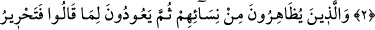
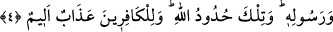

ZIHAR VE CEZÂSI
Bismillâhirrahmânirrahîm
1. Kocası hakkında seninle tartışan ve Allah’a şikâyette bulunan kadının sözünü
Allah işitmiştir. Allah, sizin konuşmanızı işitir. Çünkü Allah işitendir, bilendir.
2. İçinizden zıhâr yapanların kadınları, onların anaları değildir. Onların anaları
ancak kendilerini doğuran kadınlardır. Şüphesiz onlar çirkin bir laf ve yalan
söylüyorlar. Kuşkusuz Allah, affedicidir, bağışlayıcıdır.
3. Kadınlardan zıhâr ile ayrılmak isteyip de sonra söylediklerinden dönenlerin
karılarıyla temas etmeden önce bir köleyi hürriyete kavuşturmaları gerekir. Size
öğütlenen budur. Allah, yaptıklarınızdan haberi olandır.
4. (Buna imkân) bulamayan kimse, hanımıyla temas etmeden önce ardarda iki ay
oruç tutar. Buna da gücü yetmeyen, altmış fakiri doyurur. Bu (hafifletme), Allah’a
ve Rasûlü’ne inanmanızdan dolayıdır. Bunlar Allah’ın hükümleridir. Kâfirler için acı
bir azap vardır.
“Kocası hakkında seninle tartışan ve Allah’a şikâyette bulunan kadının sözünü
Allah işitmiştir.” Âyetin başındaki “işitti” anlamındaki fiil, “kabul etti” anlamındaki
fiilin yerine, sebep alakasından dolayı mecaz olarak kullanılmıştır. Mücâdele kelimesi,
münâkaşa ve üstün gelmek için karşısındaki kimse ile karşı karşıya gelip konuşmak,
tartışmak, nizâ ve çekişme yoluyla iş yapmak mânâsını ifâde eder. Bu fiilin aslı, “ipi